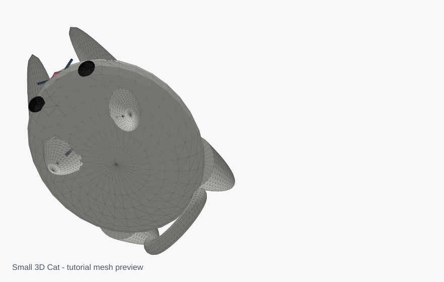

Small 3D Cat Model
Built from Tinkercad Tutorial - How To Make A Small 3D Cat by Circuits With Angel. The OBJ keeps the light gray, black eye, and pink nose materials; the STL is plain geometry for slicers.

| Step | Time | Part | Build action |
|---|---|---|---|
| 1 | 00:28 | Body | Add a sphere, scale it to 35 mm wide, 42 mm long, and 20 mm tall. |
| 2 | 00:41 | Eyes | Add a 4 mm eye, raise it 10 mm, move it to the front, then copy, paste, and mirror it. |
| 3 | 00:58 | Front legs | Use a paraboloid, rotate it 112.5 degrees, scale it to 8 mm wide, 18.95 mm long, and 7.95 mm tall, then mirror the pair. |
| 4 | 01:33 | Back legs | Use another paraboloid, rotate it 135 degrees, scale it to 10.02 mm wide, 17.77 mm long, and 12 mm tall, angle it 22.5 degrees, then mirror it. |
| 5 | 02:14 | Ears | Use paraboloids scaled to 7 mm wide, 10 mm long, and 8 mm tall, then rotate and mirror them above the eyes. |
| 6 | 02:38 | Tail | Use a donut slice, rotate it 90 degrees and 22.5 degrees, then place it at the back of the body. |
| 7 | 02:59 | Nose | Use a roof shape scaled to 1 mm wide, 5 mm long, and 1 mm tall, rotate it 90 degrees, and place it between the eyes. |
Files: small_3d_cat.obj, small_3d_cat.mtl, small_3d_cat.stl